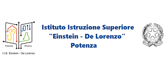
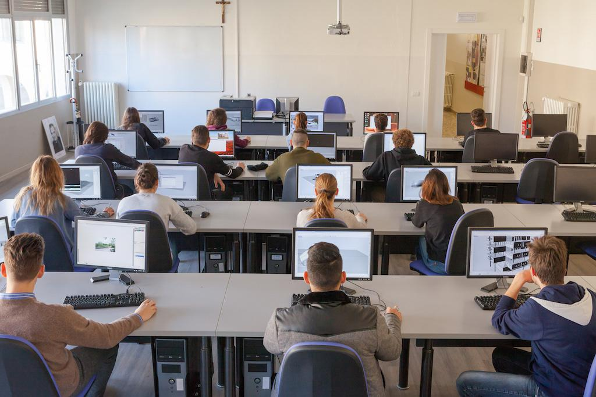
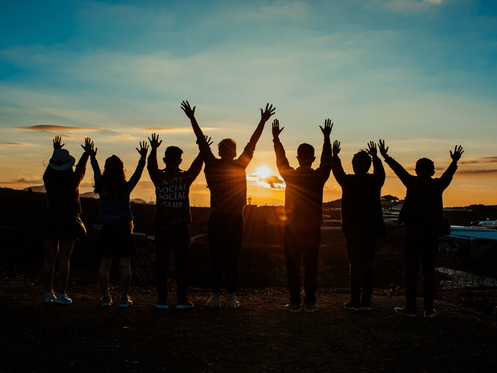
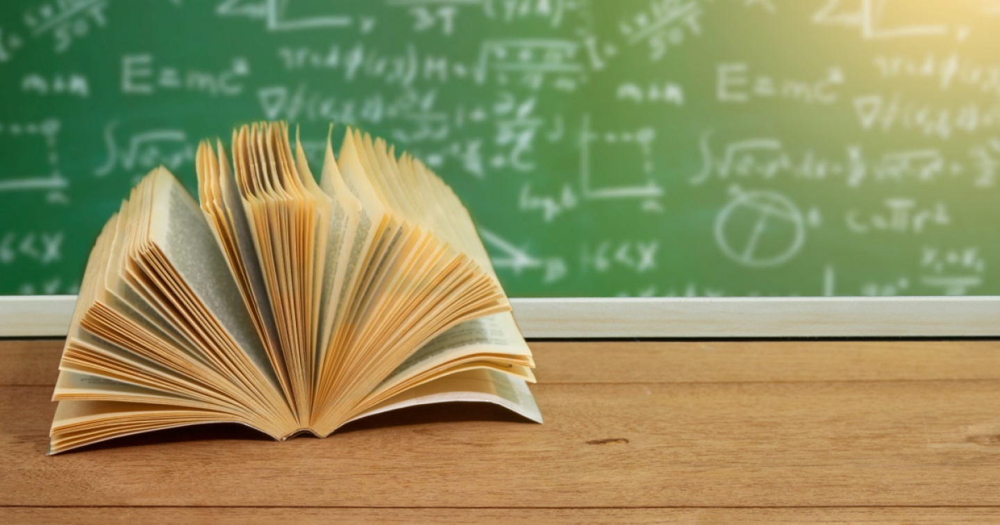

Ciao!
Mi chiamo Christian Di Nella, ho 16 anni e sono di Potenza, in Basilicata.
| Attualmente sono uno studente del 4° anno all'istituto Einstein-De Lorenzo e come indirizzo ho deciso di scegliere quello di informatica. | Ho scelto il settore informatico per specializzarmi e imparare molte cose in questo campo, soprattutto perchè è stata una mia decisione e voglio realizzare il mio sogno di diventare un ottimo programmatore/ingegnere informatico. |
|  | Nel tempo libero mi piace uscire con gli amici, giocare ai videogiochi, andare in palestra, cucinare, passare del tempo con la mia famiglia e studiare. |  |
|  |  |  |
Le materie che studio
- Informatica
- Matematica
- Italiano
- TPSIT
- Sistemi e Reti
- Telecomunicazioni
- Inglese
- Storia
- Educazione Fisica
- Educazione Civica
Obiettivi e progetti futuri
| Obiettivi | Descrizione degli obbiettivi |
|---|---|
| Scolastici | Vorrei conseguire il diploma e puntare anche alla conquista della lauea. |
| Personali | Dei miei obiettivi è quello di migliorare in palestra e poter viaggiare in giro per il mondo. |
Le mie passioni
| Calcio | Palestra |
|---|---|
| Il calcio è più di un gioco; è una danza di emozioni e impegno che unisce milioni di cuori in un'unica straordinaria passione. Questa passione da parte mia per il calcio è nata grazie al calciatore professionista Cristiano Ronaldo. | Allenarsi in palestra è un viaggio verso la forza interiore, dove ogni goccia di sudore rappresenta una vittoria personale e un passo verso il meglio di sé. Io mi alleno per migliorare sempre di più e raggiungere un fisico ideale e che mi piaccia. |
Cristiano Ronaldo
| Descrizione | ||
|---|---|---|
| Cristiano Ronaldo dos Santos Aveiro, meglio noto come Cristiano Ronaldo, è un calciatore portoghese, attaccante dell'Al-Nassr e della nazionale portoghese, di cui è capitano e con cui è diventato campione d'Europa nel 2016 e ha vinto la UEFA Nations League 2018-2019. Soprannominato CR7 per via del numero di maglia che lo ha contraddistinto per gran parte della sua carriera, è ritenuto uno dei migliori calciatori di tutti i tempi.È inoltre il marcatore più prolifico nella storia del calcio, nonché il detentore dei primati di presenze e di reti nelle nazionali di calcio. Rientra nella ristretta cerchia dei calciatori con almeno 1000 presenze in carriera, nella quale è il giocatore di movimento con il maggior numero di apparizioni. Nel corso della sua carriera ha indossato le maglie di Sporting Lisbona, Manchester United, Real Madrid, Juventus e Al-Nassr, vincendo a livello internazionale cinque UEFA Champions League, due Supercoppe UEFA, quattro Coppe del mondo per club FIFA e una Coppa dei Campioni araba. Detiene il primato di presenze, di reti e di assist nella UEFA Champions League e nelle competizioni UEFA per club. | ||

|
||